Run:ai with NVIDIA and AMD GPUs
Add an AMD GPU to a single-node Run:ai installation with the same command line, oif: the AMD GPU Operator on the kernel's own driver, Run:ai quotas proved on the AMD GPU, per-vendor caps inside a project, and Grafana dashboards with both vendors on the same panels. About 10 minutes on top of the first guide, with every screen and its real output.
1What you get
This guide adds an AMD GPU to the single-node Run:ai installation from the Single-Node Run:ai Installation Guide, so one Run:ai cluster schedules an NVIDIA and an AMD GPU side by side:
- the AMD GPU Operator 1.5.1 on the kernel's own
amdgpudriver: device plugin, node labeller and device metrics exporter; - Run:ai projects whose GPU quotas apply to the AMD GPU, proved by a quota test;
- per-vendor caps inside a Run:ai project (for example 1 NVIDIA + 1 AMD GPU);
- Grafana dashboards that show both vendors on the same panels, and the scheduling state per vendor.
The same command line, oif, installs it: the AMD stages run as part of sudo ./oif install when the host has an AMD GPU on the amdgpu driver. Planning topics (architecture, how the two vendors share the node, what Run:ai counts, design decisions) are in the companion Deployment Guide.
Everything shown here is from a real installation on the reference host: Ubuntu 26.04.1, an NVIDIA RTX A6000 and an AMD Radeon PRO W7900. Addresses and the host name are shown as placeholders.
| Step | Time |
|---|---|
| AMD GPU Operator and its checks | 2 to 5 minutes |
| Run:ai quota test on the AMD GPU | 1 minute |
| Per-vendor quota test | 1 minute |
| Recording rules, dashboards, Grafana address | 2 minutes |
2Before you start
- The Single-Node Run:ai Installation Guide is done: Run:ai is installed and its quota test passed
- An AMD GPU in the server, on the
amdgpudriver (not isolated for virtual machines) /dev/kfdexists on the host (the amdgpu driver enabled compute)- Outbound HTTPS to docker.io and rocm.github.io
Nothing on the host itself changes in this guide: no driver, no kernel module, no reboot. Every addition is a Kubernetes object.
3What oif adds
| Stage | What it does |
|---|---|
| amd-gpu-operator | checks the GPU is on amdgpu and /dev/kfd exists; creates namespace kube-amd-gpu and the metrics exporter's configuration; installs the pinned chart; waits for the node label and the device plugin |
| amd-gpu-verify | waits for amd.com/gpu on the node, runs a pod that requests the GPU and lists its devices, reads the metrics exporter |
| amd-quota | Run:ai quota test on amd.com/gpu: team-b (quota 0) waits on a free AMD GPU, team-a (quota 1) runs |
| vendor-quota | project team-c with a Run:ai quota of 2, capped at 1 NVIDIA + 1 AMD GPU; one pod per vendor runs, a second NVIDIA pod is refused |
| observability | recording rules that give both vendors one metric schema, the OIF Fleet and OIF Scheduling dashboards, Grafana on https://grafana.runai.<lb-ip>.sslip.io |
| observability-verify | every GPU metric covers both vendors; Grafana answers over HTTPS with both dashboards |
4Check the GPUs and settings
cd ~/open-inference-fabric ./oif check
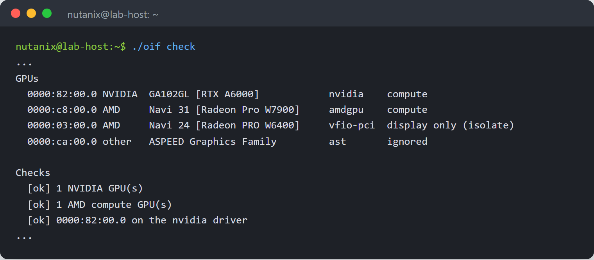
Setting in .env | What to enter |
|---|---|
AMD_GPUS | empty for every supported AMD GPU, or PCI addresses from the AMD ... compute lines |
ISOLATE_GPUS | AMD display cards to keep away from Kubernetes with vfio; none for none |
If you change .env, run sudo ./oif install --reconfigure; only invalid or changed values are asked again.
5Install the AMD GPU Operator
sudo ./oif install
Finished stages are skipped, so on a host from the first guide only the new stages run.
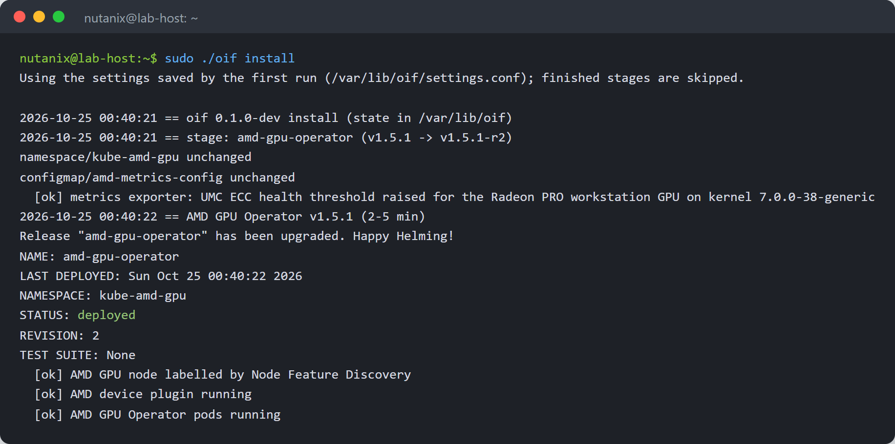
Chart settings oif uses
| Setting | Why |
|---|---|
node-feature-discovery.enabled: false, installdefaultNFDRule: true | Node Feature Discovery already runs, from the NVIDIA GPU Operator; only AMD's detection rule is added |
kmm.enabled: false and kmm.watch: false | the kernel's own driver is used, nothing is built. Both are needed: with only the first, the operator's controller waits for resource types that are not installed and restarts every two minutes |
crds.defaultCR.upgrade: true | a rerun re-applies oif's DeviceConfig |
remediation.enabled: false, draDriver.deviceClass.create: false | no Argo remediation workflows; GPUs are handed out by the device plugin |
resource_naming_strategy: single | every AMD GPU is amd.com/gpu |
exporter configuration amd-metrics-config | kernel 7.0's in-box driver reports phantom memory ECC errors on the W7900 and W7800; without a raised threshold the exporter marks the GPU unhealthy |
Look at it
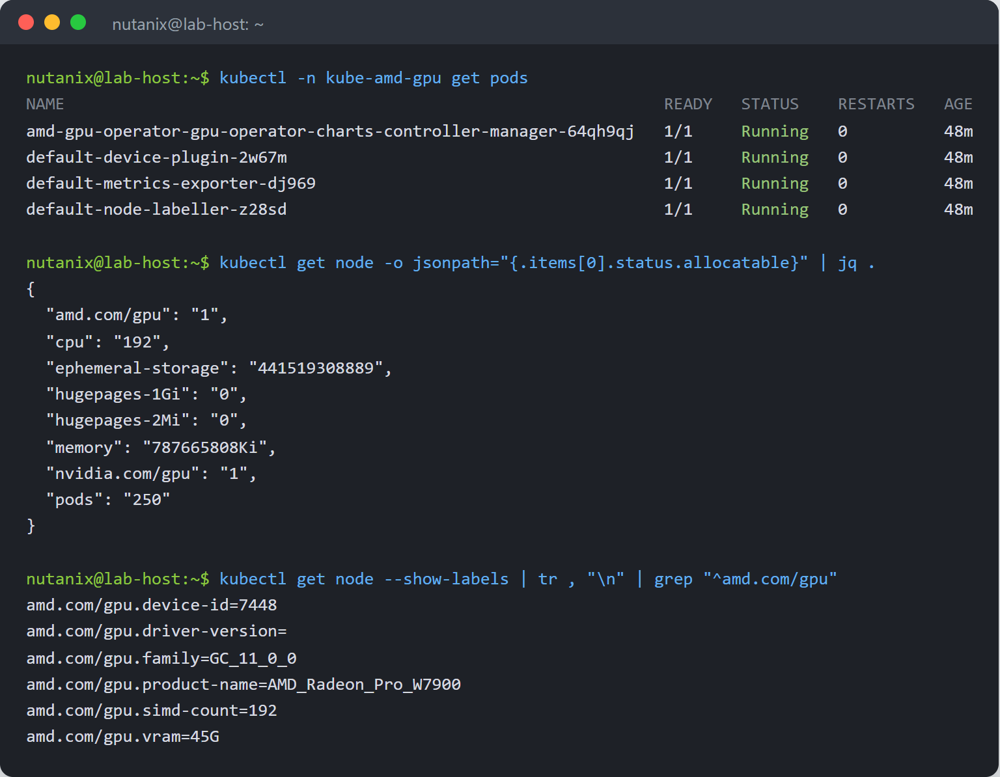
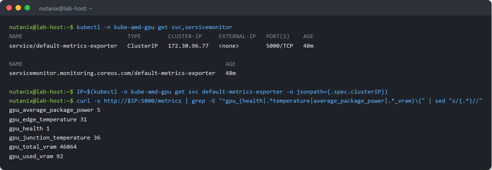
6Verify and the Run:ai quota test
The next two stages run in the same oif install.
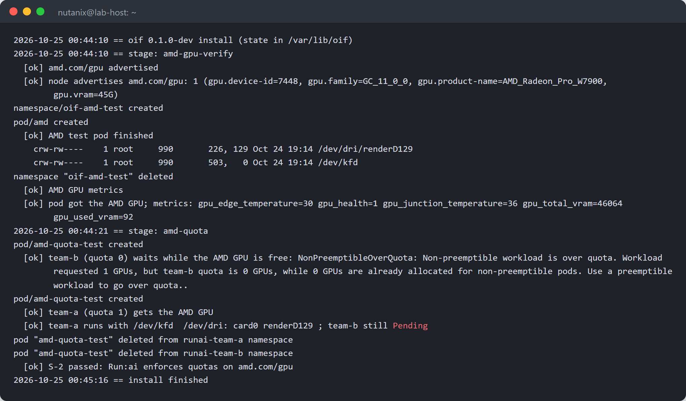
The quota test proves that the Run:ai scheduler counts amd.com/gpu against project quotas, the same as nvidia.com/gpu. A workload asks for the AMD GPU like this:
apiVersion: v1
kind: Pod
metadata:
name: amd-quota-test
namespace: runai-team-a # a Run:ai project's namespace
spec:
schedulerName: runai-scheduler
restartPolicy: Never
containers:
- name: gpu
image: busybox:1.37.0
command: ["sh", "-c", "ls /dev/kfd /dev/dri && sleep 600"]
resources:
limits:
amd.com/gpu: 1No runtime class is needed for AMD: the device plugin mounts /dev/kfd and the GPU's render device into the container. NVIDIA pods keep runtimeClassName: nvidia.
7How the GPUs are visible
On the host
nvidia-smi comes with the NVIDIA host driver. amd-smi is not on the host: the AMD GPU runs on the kernel's own amdgpu driver and oif installs no ROCm packages. Each GPU has its own device files, found through its PCI address:
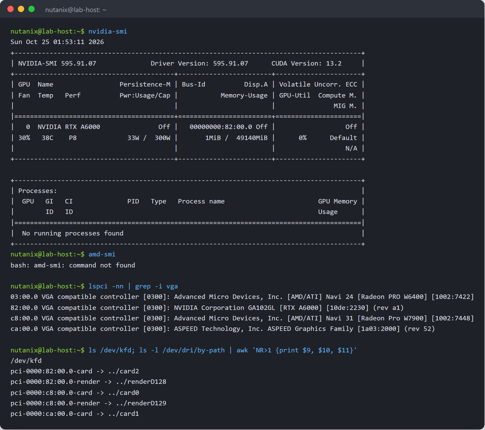
| PCI address | GPU | Driver | Host device files | Given to a pod requesting |
|---|---|---|---|---|
| 82:00.0 | NVIDIA RTX A6000 | nvidia | /dev/nvidia0, nvidiactl, nvidia-uvm, /dev/dri/card2, renderD128 | nvidia.com/gpu |
| c8:00.0 | AMD Radeon PRO W7900 | amdgpu | /dev/kfd, /dev/dri/card0, renderD129 | amd.com/gpu |
| 03:00.0 | AMD Radeon PRO W6400 | vfio-pci | none: isolated | never |
| ca:00.0 | ASPEED server-management display | ast | /dev/dri/card1 | never |
On the node, through the AMD GPU Operator
The AMD device metrics exporter image ships AMD's SMI tools (amd-smi 26.5, from ROCm 7.14). Run it in the exporter pod for the node's view:
kubectl -n kube-amd-gpu exec ds/default-metrics-exporter -- amd-smi
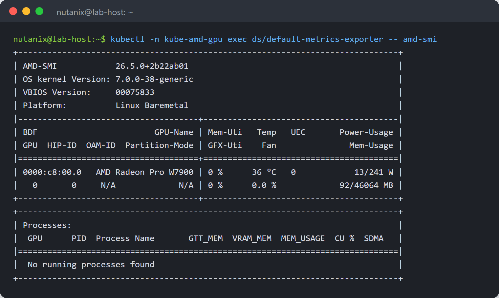
In a workload
[platform/runai/smi-pods.yaml](https://github.com/manmohanbrahma/open-inference-fabric/blob/main/platform/runai/smi-pods.yaml) starts one pod per vendor in a Run:ai project; each runs its vendor's SMI tool and lists the device files it received. They stop after two minutes.
set -a; . ./versions.env; set +a NS=runai-team-c envsubst < platform/runai/smi-pods.yaml | kubectl apply -f - kubectl -n runai-team-c logs smi-nvidia kubectl -n runai-team-c logs smi-amd kubectl -n runai-team-c delete pod -l app.kubernetes.io/part-of=oif-smi
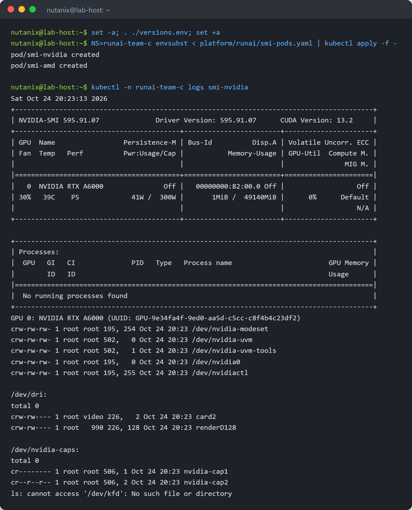
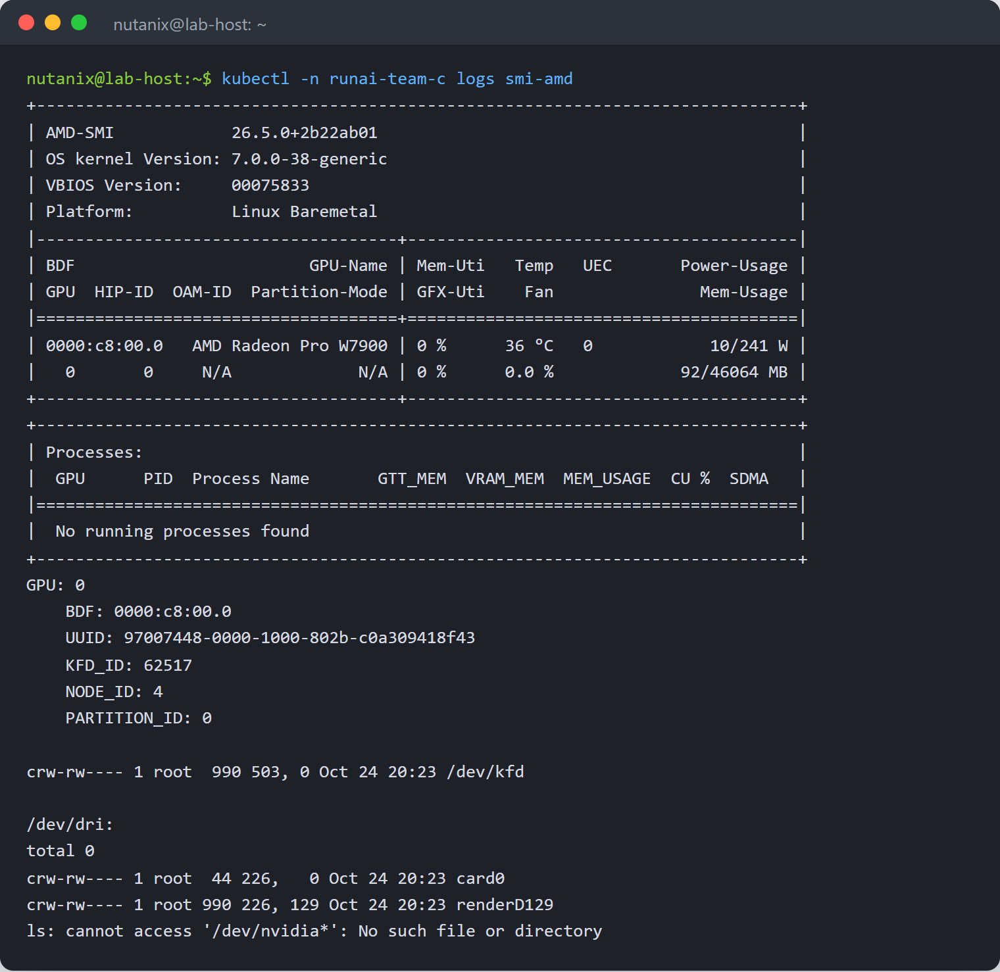
Each workload sees exactly one GPU, its own, numbered 0 inside the container whatever the host numbering.
8Per-vendor quotas
A Run:ai project has one GPU quota, counting both vendors together. Run:ai separates GPU types with node pools, but a node pool is a node label, and here both GPUs are in the same node. oif therefore keeps Run:ai's total quota and adds a Kubernetes ResourceQuota per vendor in the project's namespace:
apiVersion: v1
kind: ResourceQuota
metadata:
name: oif-gpu-vendor
namespace: runai-team-c
spec:
hard:
requests.nvidia.com/gpu: "1"
requests.amd.com/gpu: "1"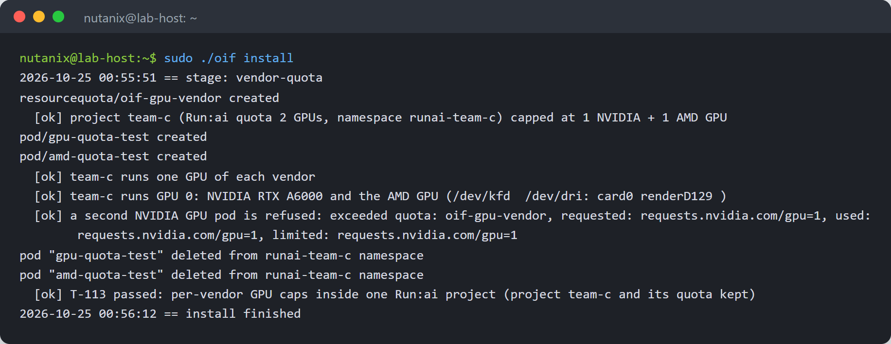
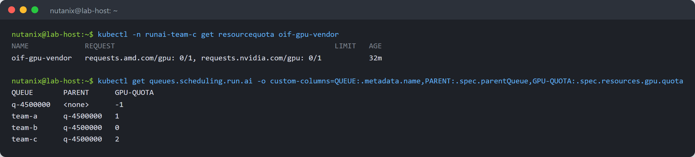
| Limit | Enforced by | A pod over the limit |
|---|---|---|
| Project total (team-c: 2 GPUs) | Run:ai scheduler | waits in the queue (Pending) |
| Per vendor (team-c: 1 NVIDIA, 1 AMD) | Kubernetes ResourceQuota | is refused when it is created (exceeded quota) |
To cap another project, apply the same object to its namespace, runai-<project>.
9Dashboards for both vendors
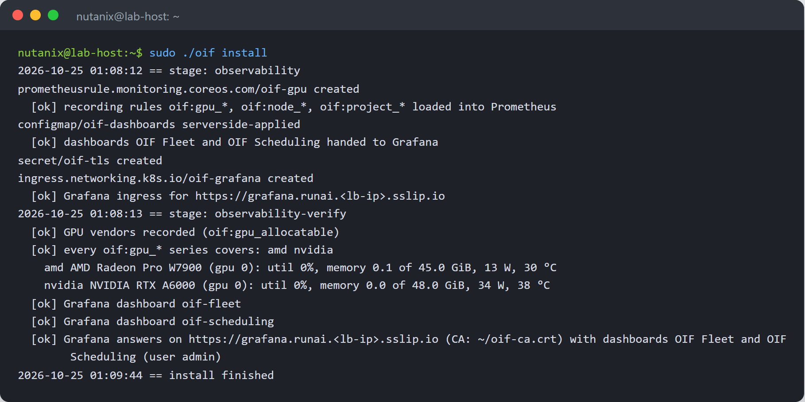
Open https://grafana.runai.<lb-ip>.sslip.io in the browser that already trusts the oif CA, and log in as admin with the Grafana password from .env. To read it back:
kubectl -n monitoring get secret grafana-admin -o jsonpath='{.data.admin-password}' | base64 -d; echo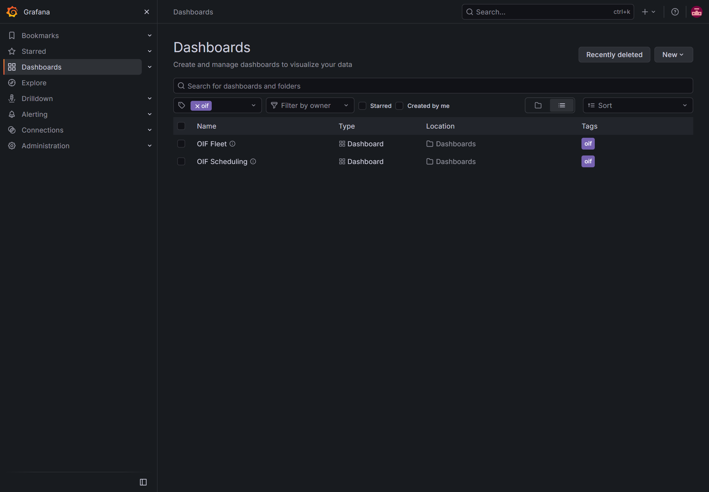
OIF Fleet shows every GPU on the same panels, NVIDIA in green and AMD in red: utilisation, memory (total dashed), power, temperature (AMD junction dashed), shader clock, and the host's CPU and memory.
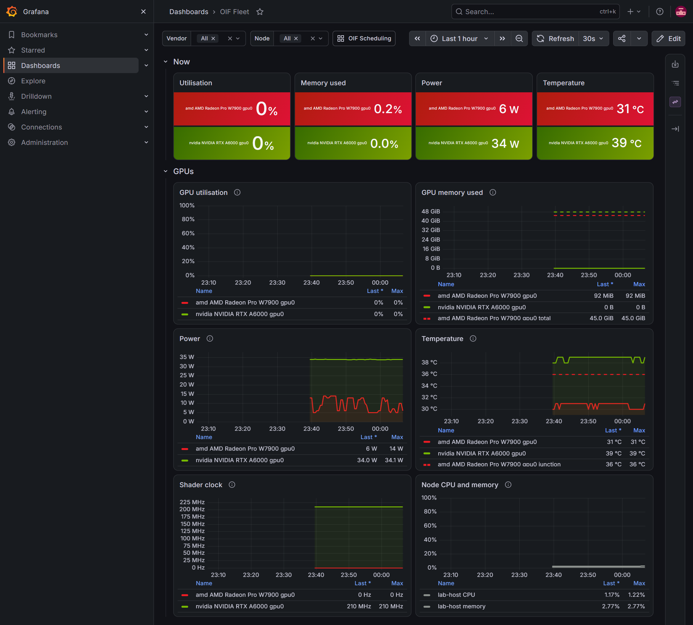
OIF Scheduling shows GPUs offered, in use and waiting per vendor (from Kubernetes, so the AMD GPU is always counted), the Run:ai project quotas, and the per-vendor caps. Here with team-c running one pod per vendor and team-b's AMD pod waiting on its quota of 0:
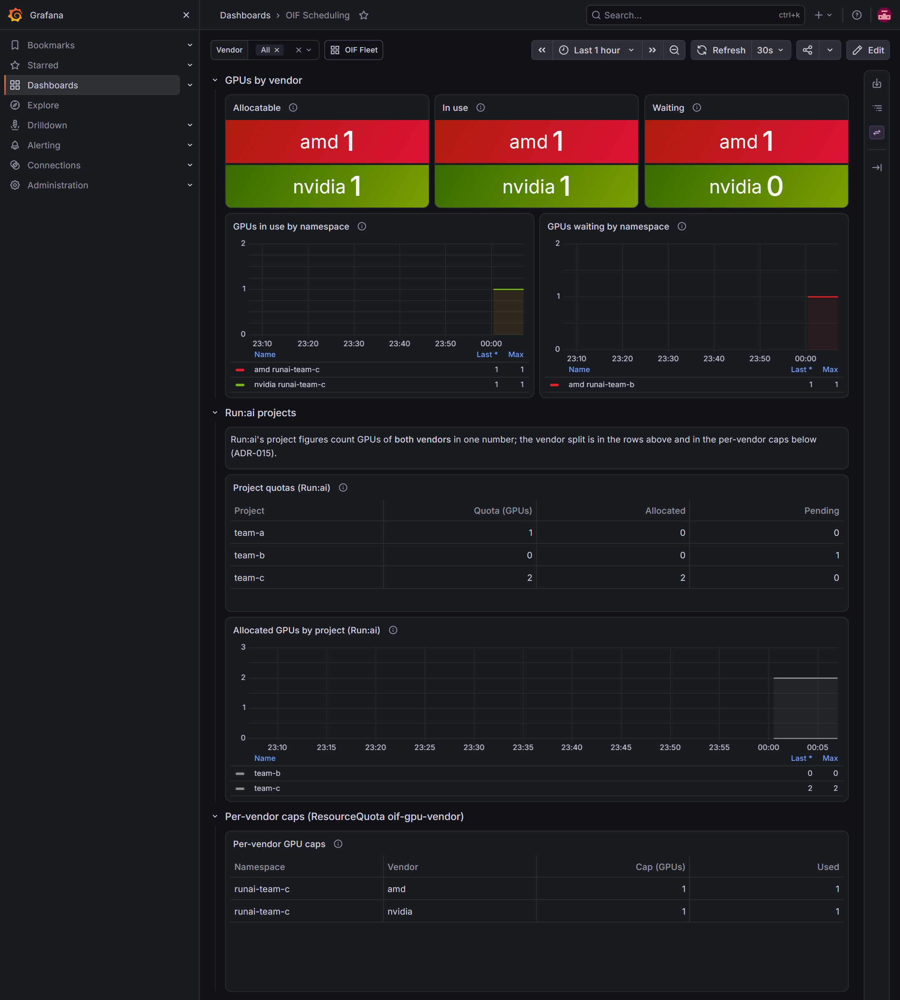
Every panel uses the oif:* series from the recording rules, for example:
| Series | NVIDIA source | AMD source |
|---|---|---|
oif:gpu_util_ratio | DCGM_FI_DEV_GPU_UTIL / 100 | gpu_gfx_activity / 100 |
oif:gpu_mem_used_bytes | DCGM_FI_DEV_FB_USED (MiB) | gpu_used_vram (MiB) |
oif:gpu_power_watts | DCGM_FI_DEV_POWER_USAGE | gpu_average_package_power |
oif:gpu_temp_celsius | DCGM_FI_DEV_GPU_TEMP | gpu_edge_temperature |
The full schema is in the Deployment Guide.
10What Run:ai shows
The same demo, seen in Run:ai:
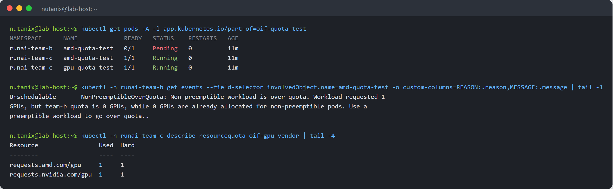
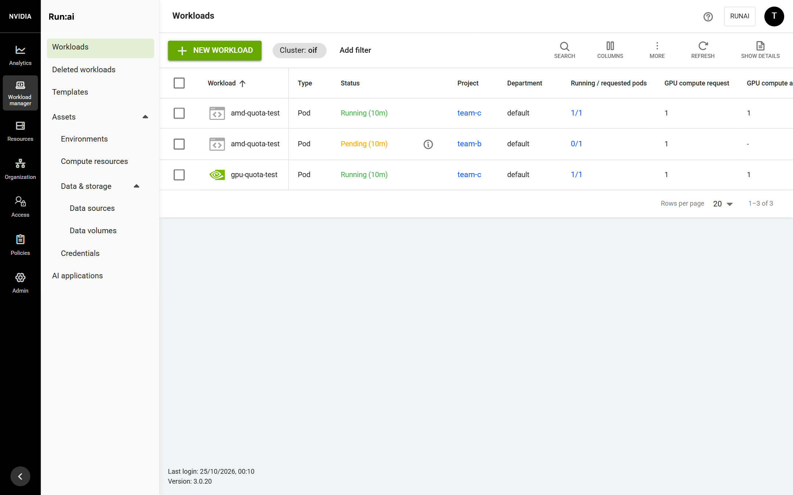
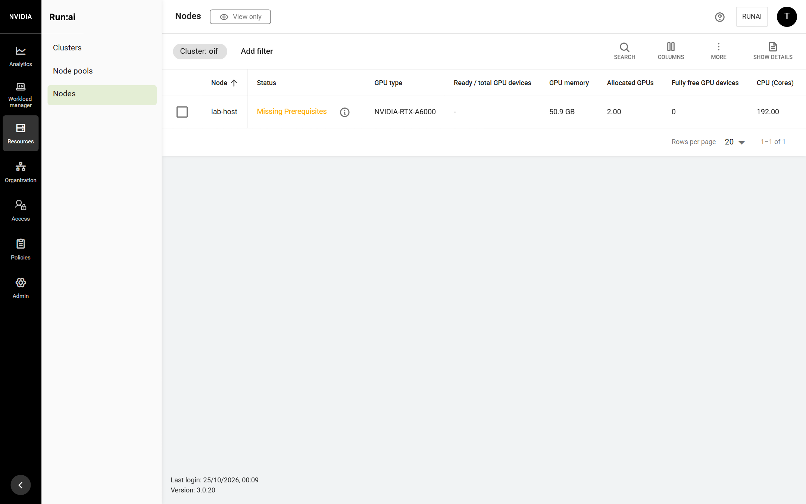
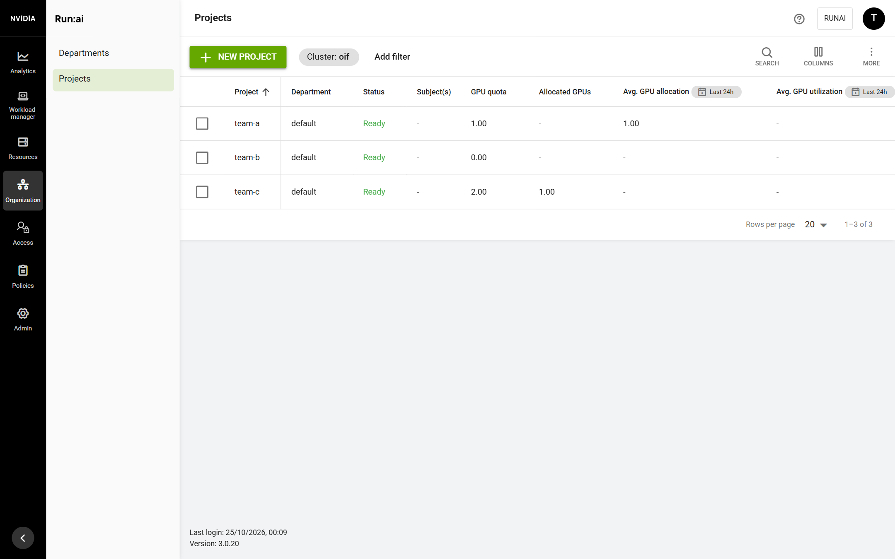
| Run:ai view | Counts the AMD GPU |
|---|---|
| Scheduling and quotas (KAI Scheduler) | yes |
| Workloads page | yes |
| Nodes page, allocated GPUs | yes |
| Nodes and Node pools pages, GPU type and device count | no: NVIDIA only |
| Projects page, allocated GPUs | not consistently |
| Run:ai metrics per project, queue, workload | yes, as one number with NVIDIA |
11Troubleshooting
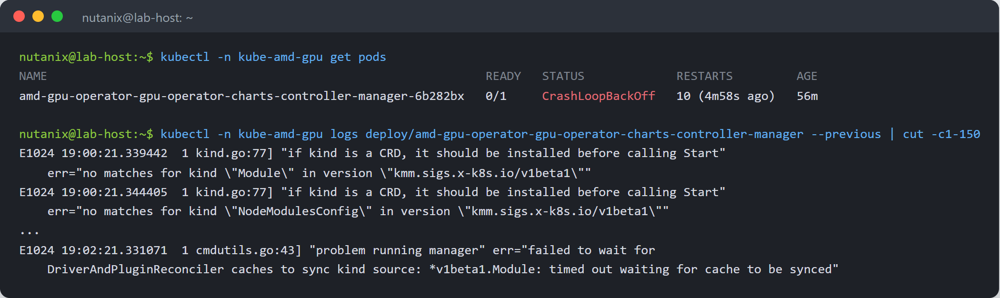
| Problem | Cause and fix | |
|---|---|---|
amd.com/gpu advertised: not reached, no default-device-plugin, controller in CrashLoopBackOff with no matches for kind "Module" | kmm.watch was left on while kmm.enabled was off. Fixed in oif; run sudo ./oif install again, the stage reruns by itself. | |
<address> is on driver 'vfio-pci', not amdgpu | The GPU is isolated for virtual machines in .env (ISOLATE_GPUS); remove it there, sudo ./oif install --reconfigure, reboot when asked. | |
/dev/kfd is missing | The amdgpu driver did not enable compute: `sudo dmesg \ | grep -i kfd`. |
gpu_health 0 on a Radeon PRO W7900 or W7800 | Phantom memory ECC errors on kernel 7.0; check that configmap amd-metrics-config in kube-amd-gpu carries the raised threshold. | |
A pod is refused with exceeded quota: oif-gpu-vendor | The project's per-vendor cap is used up; this is the cap working. Raise it in the ResourceQuota, or wait for the other pod to finish. | |
| A Grafana panel shows only one vendor | That vendor's exporter is not scraped: kubectl -n gpu-operator get pods -l app=nvidia-dcgm-exporter, kubectl -n kube-amd-gpu get pods,servicemonitor. | |
| Run:ai's Nodes page shows more GPUs allocated than the node has | Expected: Run:ai counts the AMD allocation but lists only NVIDIA GPUs. |
12Uninstall
sudo ./oif uninstall removes the AMD GPU Operator, the quotas and the dashboards together with the rest of the cluster. The host keeps its amdgpu driver, which oif never changed.